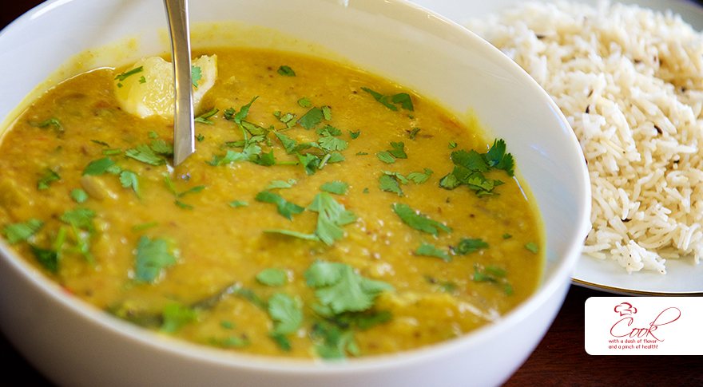

A commonly found vegetarian dish in India. Best served with rice or naan.
Ingredients List:
- 1 cup of masoor daal
- 2 cups of water
- Little bit of turmeric powder
- 2 or 3 tablespoons of oil
- Onions sliced or chopped
- Lemon juice
- Cilantro
- 1 tablespoon of chili powder
- 1 tablespoon of cumin powder
- Salt to taste
- 1 tablespoon of ginger-garlic paste
Cooking Instructions:
- Add oil onto a pan on medium heat.
- Add the onions and cook until brown.
- Once brown, add chili powder, cumin powder and ginger-garlic paste.
- Turn off heat once the onions and spices are mixed together.
- In another pan, add water on high heat until boil.
- Once water is boiling, add in the masoor daal.
- Cook for 10 minutes. Stir occasionally. Turn off once daal is soft.
- Once the daal is soft, use a handheld blender to blend the daal.
- Once blended, add the pan onto the stove on medium to high heat and add water if daal is to thick.
- Add the onions and spices onto the daal pan and cook until boil. Add salt and lemon juice to taste.
- Serve with rice or naan.